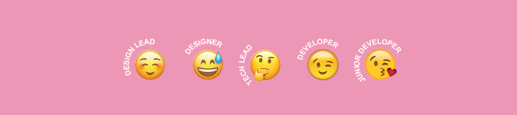
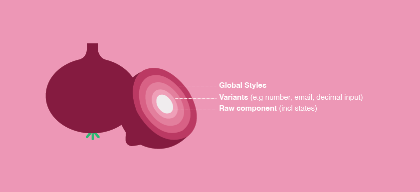
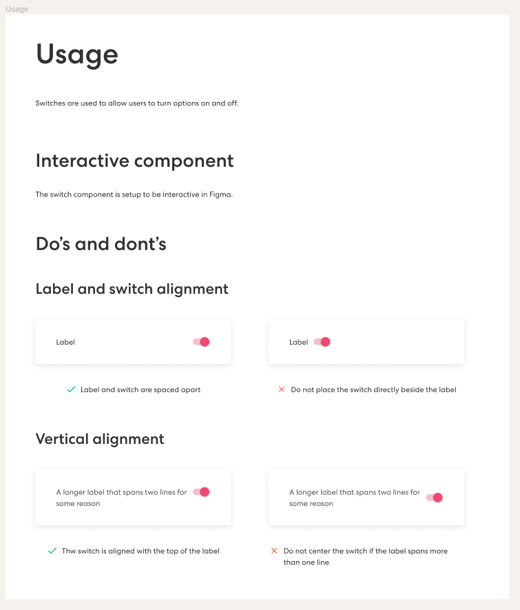

React / TypeScript / JavaScript / JSX / SASS / CSS / HTML / npm / Node.js / Jest / Taiko / Gauge / Percy / Gitlab / Storybook / Zeroheights / Linux / Jira / Miro / Figma /
Sharesies is an online investing platform that makes it easy for users to buy and sell shares, ETFs, and manage their funds. As a Developer on the Design System team, I played a key role in building the design system from the ground up. My focus was on standardizing and scaling reusable UI components with the aim of creating a cohesive, and accessible experience across the webapp.
The Design System team's goal is to enable the Sharesies product teams to efficiently create inclusive, cohesive, and engaging experiences that put investors in control of their financial future.
Our team engaged in daily discussions to shape the design system thoughtfully and strategically. We carefully considered where to house the design and code, established clear naming conventions, and defined foundational components. Taking a holistic approach, we focused on future-proofing the system by ensuring the components were scalable, easy to maintain, and built to support the product for years to come, ultimately creating a sustainable design system.
With a live webapp already in use, I needed to port the existing components into the design system repository and apply a standardized design system treatment. The first step was converting React class components into functional components. From there, I worked with JSX, TypeScript, and Sass, carefully structuring each component. To manage states, validation, and submissions, I wrapped components in Formik components. Every component was then styled using global Sass files. The challenge was to make components flexible enough to adapt to different designs, and support dynamic validation and submission requirements, they needed to be reusable.
The inputs below share the same raw input component but are wrapped in different functions and styles—one consuming text, the other numbers.
Once a component was built in the design system repository, it needed to be displayed in Storybook, an interface for showcasing and testing components. To do this, I wrote a ‘Story’ file for each component, this file consumed my component code and spat out an interactive version, allowing users to interact with different styles, states, and values.
Storybook required me to write a ‘Story’ file for each component, this file consumed my component and spat out an interactive visual of it which gave any user of the design system the ability to play around with styles, states, and values.
The final step was to test. Using Jest, I wrote headless test files with predefined instructions to validate the component’s behavior. As a design system requirement, each component had to achieve 100% test coverage.
Before packaging the component in a npm package, I had to write documentation. We used Zeroheights to document the design, it worked well for the team as we were able to integrate Storybook and Figma token files to create a single source of truth for both design and code.
I wrote detailed documentation outlining usage guidelines, technical development considerations, and best practices, including key “do’s and don’ts.” Once the content was reviewed and finalized, I announced the release to the wider team through Slack and presented key updates during all-team meetings to ensure alignment and encourage adoption.
Now the component would be ready for deployment within the webapp. I replaced the old components with their newly updated design system version. To ensure I didn’t break anything on the front or back end of the webapp, I had to test the branch before merging my changes.
I leveraged a Taiko repository to test the new components in real user flows, writing end-to-end tests to verify their functionality. These tests included capturing snapshot images at key interaction points to track any unexpected changes.
Then, I used Percy, a visual diffing tool that compared the snapshots before and after the update. This allowed me to detect and resolve any visual discrepancies before deployment.
And that’s it folks! Thanks for taking the time to read about my journey in building and integrating the design system. I hope it gave you some insight into my process, challenges and impact. Feel free to reach out if you’d like to learn more.